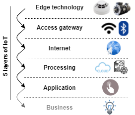

IoT overview
IoT basics
- Internet of things
- Extends Internet connectivity beyond standard devices to everyday objects
- Usually uses IPv6 due to the limited number of IPv4 addresses
- Operating systems: Linux or Windows (10) IoT
Top-level components
- Device
- Includes hardware and software that directly interact with the world.
- They connect to a network to communicate with each other, or to centralized applications
- Gateway
- Enables services to reach cloud services.
- Infrastructure component providing security and protocol translations
- Also used as a service that process data on behalf of group or cluster devices.
- Often a device e.g. smart home hub.
- Usually from the same vendor
- Cloud
- See cloud computing
- Sensors
- Detects, measures or indicates any specific physical quantity
- E.g. light, heat, motion, moisture, pressure, or similar entities
- Converts them into any other form which is mostly, electrical pulses.
IoT communication models
Device-To-Device (D2D)
- Direct communication between devices
- Uses a medium such as Bluetooth Low Energy etc.
- Common in home automation systems e.g. light bulbs or wearables e.g. smart watch and heart monitor.
- Simpler security
- E.g. Vehicle-to-vehicle (V2V)
- Uses Vehicle Ad Hoc Network (VANET)
- Based on MANET i.e. decentralized wireless network (without routers)
Device-To-Cloud (D2C)
- IoT device directly communicating with the cloud server
- Often uses ethernet or WiFi
- Lets the user (and an application) to obtain remote access to a device
- E.g. smart card for dogs, remote monitoring
- Two credentials:
- the network access credentials (such as the mobile device's SIM card)
- credentials for cloud access
- E.g. Nest Learning Thermostat
Device-To-Gateway (DTG)
- IoT devices basically connect to an intermediary device to access a cloud service
- Often includes an application software operating on a local gateway device (like a smartphone or a "hub")
- Gateway provides security, protocol translation and usually does aggregation
- E.g. Samsung SmartThing ecosystem
Back-end data-sharing
- Extends device-to-cloud model
- Access are granted to the uploaded data to third-parties
- E.g. Map My Fitness that compiles data from other applications
Layered architecture
- IoT architecture can be categorized into different layers.
- There's no consistency regarding naming of layer.
- Different methodologies are used but the concepts they represent are very similar.
- 📝 It usually consists of 5 layers:
- Edge technology layer the "IoT objects collecting data"
- Access gateway layer the "data transporter"
- Internet layer the "endpoint connector"
- Middleware layer the "data analyzer and processor"
- Application layer the "user interface"
- Some sources also name sixth layer:
- Business layer the "core logic"
- Each layer is utilized by layer below without knowledge of other layers
- 
- Read more: IoT Elements, Layered Architectures and Security Issues: A Comprehensive Survey
Five-layers of IoT architecture
Edge technology layer
- Also known as perception layer or hardware layer
- Physical objects (hardware components)
- Covers IoT capable devices
- E.g. sensors, actuators, heat sensor, RFID tags, readers, device itself
- Connects devices within network and server
- Gathers environment data
- Key security components
- Encryption and key agreement
- Sensor data protection
- Vulnerabilities
- Eavesdropping: real time attack to intercept privacy communications.
- Node Capture: capturing a key node such as gateway to reveal information.
- Fake Node and Malicious: adding node to input fake data to stop transmitting real information
- Replay (play back) attack: eavesdrops a communication and reusing it to authenticate.
- Timing Attack: Extract secrets by observing respond time
Access gateway layer
- Also known as network layer or transport layer
- Handles data transmission i.e. transferring the data through network
- E.g. Wi-Fi, bluetooth
- Enables communication
- Connects two endpoints e.g. a clients with a device.
- Includes the initial data handling.
- Through e.g. message routing, message identification, and subscriptions.
- Key security components
- Encryption
- Identity authentication
- Vulnerabilities
- Denial of Service (DoS) Attack with redundant requests
- Main-in-The-Middle (MiTM) Attack: to intercept and manipulate data in real-time
- Storage Attack: Changing data stored in device or cloud
- Exploit attack: Exploits vulnerabilities in an application, system or hardware
Internet layer
- Responsible for end-points connectivity.
- Carries out communication between two endpoints.
- E.g. device-to-device, device-to-cloud, device-to-gateway and back-end data-sharing.
Middleware layer
- Also known as processing layer
- Responsible for device and information management.
- Handles data analytics
- I.e. storing, processing and analysis of data.
- E.g. data analysis, data aggregation, data filtering, device information discovery, and access control.
- Behaves as interface for two-way communication between
- Application layer (the user interface).
- Edge technology layer (the hardware).
- Key security components
- Key security layer, secure cloud computing, antivirus
- Vulnerabilities
- Exhaustion: Can disturb memory, battery e.g. after effect of a DoS
- Malware
Application layer
- The user interface for
- Graphic data representation
- Controlling, managing and commanding IoT devices.
- Responsible for delivering service and data to users.
- A service is application-specific e.g. industrial, manufacturing, automobile, security, healthcare...
- Key security components
- Authentication
- Key agreement
- Vulnerabilities
- Cross site scripting: injecting code through e.g. JavaScript
- Malicious code attack: can activate itself or require user attention to perform an action.
- Dealing with Mass Data
- Caused by massive amount of data transmission
- Can lead to data loss and network disturbance
Other IoT layers
Business layer
- Includes business models
- System management
- Key security components
- Privacy protection
- Vulnerabilities
- Business logic attack: exploits a programming flaw
- Zero-day attack: exploits security hole unknown to the vendor
IoT connectivity
Wireless IoT connectivity
| Approx. range up to | Connectivity | Speed |
|---|---|---|
| 10 cm | NFC | 424 kbit/s |
| 1 m | RFID | 300 tags per second |
| 10 m | Li-Fi | 100 gbit/s |
| 60 m | Bluetooth low energi (BLE) | 1 or 2 mbit/s |
| 100 m | WiFi | 1300 mbit/s |
| 1 km | Wi-Fi HaLow | 78 mbit/s |
| 2 km | 5G | 20 gbit/s |
| 30 km | LTE-Advanced | 300 mbit/s |
| 70 km | Celullar | - (depends on 4g etc.) |
| 1000 km | LPWAN | 200 kbit/s |
| World-wide | VSAT | 16 mbit/s |
Short-range wireless communication
- Bluetooth Low Energy (BLE)
- Newer versions of bluetooth (after 4.0)
- Optimized for battery usage.
- Wi-Fi
- Wireless network protocol using radio waves.
- Wi-Fi 6 specification standard (2020) is the latest standard (x6 faster).
- Radio-Frequency Identification (RFID)
- Data storage tag that can be attached to an item for tracking
- Passive tag has range up to 1m while active tags can go up to 100m.
- Used in e.g. passports, credit cards.
- Li-Fi (Light-Fidelity)
- Similar to Wi-Fi, but using visible light for communication
- Near-Field Communication (NFC)
- Based on a radio frequency (RF)
- Used e.g. in phones, payment cards
- Must either either physically touch or be in a few centimeters of each other.
Medium-Range Wireless Communication
- LTE-Advanced: Formally submitted as a candidate 4G, often being described as 3.9G.
- Wi-Fi HaLow: low power, long-range, also known as "WiFi for Internet of Things"
- 5G: Introduced in 2019, highest with minimum of 10 Gbps
Long Range Wireless Communication
- Low-Power Wild-Area Network (LPWAN)
- Long range communication (up to 10 km) at a low bit rate
- (VSAT) Very Small Aperture Terminal
- World-wide satellite communication technology uses small dish antennas
- Cellular using e.g. radio towers to spread e.g. 4G, 5G..
Wired IoT connectivity
- Ethernet (cat 6 up to 10 Gbps speed)
- Power-Line Communication (PLC) : using electrical wiring to carry power and data, around 200 Mbit/s.